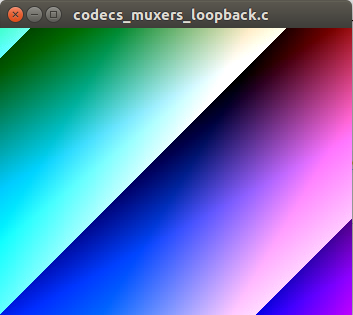

Application code analysis
The example source code: codecs_muxers_loopback.c
This example implements a full video coding and muxing loopback path:
- Server side:
- generates a video raw source;
- encodes the video source (in one of the following: H.264, MPEG2-video or MLHE);
- multiplex the video encoded elementary stream in RTSP session;
- Client side:
- de-multiplex video elementary stream;
- decodes the video;
- renders the video in a frame buffer.
The application flow in this example is analogue to the one shown in figure 2, but with the following modified thread scheme:
- Server side:
- A 'producer thread' generates raw video and sends raw YUV frames to the video encoder;
- A 'multiplexer thread' receives encoded frames from video encoder and sends to the multiplexer (that is, to the remote client using the RTSP session);
- The main thread is used to execute the HTTP server listening loop (until an application interruption signal -"ctrl+c"- is recieved)
- Client side:
- A 'de-multiplexer thread' receives the encoded frames from the RTSP connection, and sends to the video decoder;
- A 'consumer thread' finally reads the raw video frame from the decoder and renders (using the 3rd party library SDL2).
Initializing application
Initialization consists in the same steps as the ones enumerated in the "typical application prologue" (see the API documentation):
- Initialize (open) the processors (PROCS) module (this is done by calling function 'procs_module_open()');
- Register the processor types we support in the application (performed using the operation 'PROCS_REGISTER_TYPE' provided through the function 'procs_module_opt()');
- Create (open) an instance of the PROCS module (using the function 'procs_open()' which returns an instance handler);
- Creates specific processors instances (using the operation 'PROCS_POST' with the function 'procs_opt()'; a unique processor identifier is supplied for each instance):
- Create a video encoder instance
- Create a video decoder instance
- Create a RTSP multiplexor instance
- Create a RTSP de-multiplexor instance
Nevertheless, there are some new considerations when initializing and handling the multiplexer and demultiplexer processors. We have an insight on this in the next subsections.
Initializing and handling the multiplexer
After instantiating the multiplexer, we must register all the elementary streams we will be serving (in this example only a video stream is served, but we may add other video or audio streams).
This is done using the following API call:
1 ret_code= procs_opt(procs_ctx, "PROCS_ID_ES_MUX_REGISTER", mux_proc_id, mime_setting, &rest_str);
If succeed, the elementary stream identifier will be returned in a JSON of the form:
1 {"elementary_stream_id":number}
Knowing the elementary stream Id. is essential for multiplexing; is a unique number used to discriminate to which of the multiplexed streams an input frame is to be sent.
This is implemented in the code of the multiplexer thread (function 'mux_thr()'). The important detail to remark is that the elementary stream Id. must be specified in the input frame using the proc_frame_ctx_s::es_id field.
1 proc_frame_ctx->es_id= thr_ctx->elem_strem_id_video_server;
2 ret_code= procs_send_frame(thr_ctx->procs_ctx, thr_ctx->mux_proc_id, proc_frame_ctx);
If more than one source is used (e.g. video and audio), you must use the corresponding elementary stream Id. for sending the frames of each source.
Initializing and handling the de-multiplexer
Regarding to the de-multiplexer initialization, the RTSP client must be provided with the listening URL in the instantiation (e.g. "rtsp_url=rtsp://127.0.0.1:8574/session").
When handling the de-mutiplexer, client application does not know at first instance how many sources are carried in a session. Thus, once the session is established and the multimedia streaming started -that is, when receiving the first frame-, the de-multiplexer API should be used to know the elementary streams carried and the identifiers assigned to each one. It is important to remark that the elementary streams identifiers used at the multiplexer are decoupled of the ones used at the de-multiplexer (in fact, in the case of the RTSP implementation, the de-multiplexer uses the service port as the Id., and the multiplexer use an incrementing counter).
We ask then for the state of the demutiplexer when receiving the first frame (see de-multiplexer thread function 'dmux_thr()'):
1 ret_code= procs_opt(thr_ctx->procs_ctx, "PROCS_ID_GET", thr_ctx->dmux_proc_id, &rest_str);
The answer will be of the form:
3 "rtsp_url":"rtsp://127.0.0.1:8574/session"
7 "sdp_mimetype":"video/MP2V",
9 "elementary_stream_id":59160
This response should be parsed to obtain the elementary stream Id. It will be used to identify which decoder/processor to send each received frame (the stream identifier will be specified in the proc_frame_ctx_s::es_id fied of the received frame).
In this example, we just have one video stream so all the frames received from the de-multiplexer will have the same stream Id.
Running the application
Just type in a shell:
LD_LIBRARY_PATH=<...>/MediaProcessors_selfcontained/_install_dir_x86/lib <...>/MediaProcessors_selfcontained/_install_dir_x86/bin/mediaprocs_codecs_muxers_loopback
Example:
1 MediaProcessors_selfcontained$ LD_LIBRARY_PATH=./_install_dir_x86/lib ./_install_dir_x86/bin/mediaprocs_codecs_muxers_loopback
2 Created new TCP socket 4 for connection
4 live555_rtsp.cpp 2290 Got a SDP description: v=0
5 o=- 1508643478136254 1 IN IP4 192.168.1.37
9 a=tool:LIVE555 Streaming Media v2017.07.18
18 a=rtpmap:96 mp2v/90000
21 live555_rtsp.cpp 2358 [URL: 'rtsp://127.0.0.1:8574/session/'] Initiated the sub-session 'video/MP2V' (client port[s] 59160, 59161)
22 live555_rtsp.cpp 2417 [URL: 'rtsp://127.0.0.1:8574/session/'] Set up the sub-session 'video/MP2V' (client port[s] 59160, 59161)
23 live555_rtsp.cpp 2459 [URL: 'rtsp://127.0.0.1:8574/session/'] Started playing session...
A window should appear rendering a colorful animation:

Figure 4: Rendering window; mediaprocs_codecs_muxers_loopback example.
Using the RESTful API
In the following lines we attach some examples on how to perform RESTful requests in run-time.
For this purpose, we will use CURL HTTP client commands from a shell.
We assume the 'mediaprocs_codecs_muxers_loopback' application is running.
To get the general representation of the running processors, type:
1 $ curl -H "Content-Type: application/json" -X GET -d '{}' "127.0.0.1:8088/procs.json"
10 "proc_name":"ffmpeg_m2v_enc",
14 "href":"/procs/0.json"
20 "proc_name":"ffmpeg_m2v_dec",
24 "href":"/procs/1.json"
30 "proc_name":"live555_rtsp_mux",
34 "href":"/procs/2.json"
40 "proc_name":"live555_rtsp_dmux",
44 "href":"/procs/3.json"
In the response above you will find the list of the instantiated processors specifying:
- the API identifier corresponding to each processor;
- the processor name;
- the link to the processor representational state.
To get the representational state of any of the processors:
1 $curl -H "Content-Type: application/json" -X GET -d '{}' "127.0.0.1:8088/procs/0.json"
7 "latency_avg_usec":35502,
9 "proc_name":"ffmpeg_m2v_enc",
10 "bit_rate_output":307200,
11 "frame_rate_output":15,
1 $curl -H "Content-Type: application/json" -X GET -d '{}' "127.0.0.1:8088/procs/1.json"
9 "proc_name":"ffmpeg_m2v_dec"
1 $curl -H "Content-Type: application/json" -X GET -d '{}' "127.0.0.1:8088/procs/2.json"
8 "proc_name":"live555_rtsp_mux",
10 "time_stamp_freq":9000,
11 "rtsp_streaming_session_name":"session"
13 "elementary_streams":[
15 "sdp_mimetype":"video/mp2v",
16 "rtp_timestamp_freq":9000,
17 "elementary_stream_id":0
1 $curl -H "Content-Type: application/json" -X GET -d '{}' "127.0.0.1:8088/procs/3.json"
8 "proc_name":"live555_rtsp_dmux",
9 "rtsp_url":"rtsp://127.0.0.1:8574/session"
11 "elementary_streams":[
13 "sdp_mimetype":"video/MP2V",
15 "elementary_stream_id":40014
If you want to change some of the video encoder parameters, let's say the ouput width and height, do:
1 $curl -X PUT "127.0.0.1:8088/procs/0.json?width_output=720&height_output=480"
3 $curl -H "Content-Type: application/json" -X GET -d '{}' "127.0.0.1:8088/procs/0.json"
9 "latency_avg_usec":40751,
11 "proc_name":"ffmpeg_m2v_enc",
12 "bit_rate_output":307200,
13 "frame_rate_output":15,
You can even change the processor type on tun time. You have to be very careful of changing both, encoder and decoder sides.
In the following code we switch from MPEG2-video to H.264 video coding:
1 $ curl -X PUT "127.0.0.1:8088/procs/0.json?proc_name=ffmpeg_x264_enc"; curl -X PUT "127.0.0.1:8088/procs/1.json?proc_name=ffmpeg_x264_dec";
3 $ curl -H "Content-Type: application/json" -X GET -d '{}' "127.0.0.1:8088/procs/0.json"; curl -H "Content-Type: application/json" -X GET -d '{}' "127.0.0.1:8088/procs/1.json"
9 "latency_avg_usec":941490,
11 "proc_name":"ffmpeg_x264_enc",
12 "bit_rate_output":307200,
13 "frame_rate_output":15,
18 "flag_zerolatency":false
29 "proc_name":"ffmpeg_x264_dec"
Changing RTSP multiplexer / de-multiplexer settings is also possible. We have to take into account:
- Any change on the server or client side will break the RTSP session;
- Changes on any side, server or client, imply applying proper changes on the other side to successfully restore the RTSP session;
- Any change on the server side reset the RTSP connection. As there is a connection time-out of 60 seconds, is very feasible that you would not be able to re-use the port. In consequence, if you have to change the server settings, make sure you are also changing the server port.
Get the multiplexer and de-mutiplexer representational state:
1 $ curl -H "Content-Type: application/json" -X GET -d '{}' "127.0.0.1:8088/procs/2.json" &&
2 curl -H "Content-Type: application/json" -X GET -d '{}' "127.0.0.1:8088/procs/3.json"
10 "time_stamp_freq":9000,
11 "rtsp_streaming_session_name":"session"
13 "elementary_streams":[
15 "sdp_mimetype":"video/mp2v",
16 "rtp_timestamp_freq":9000,
17 "elementary_stream_id":0
28 "rtsp_url":"rtsp://127.0.0.1:8574/session"
30 "elementary_streams":[
32 "sdp_mimetype":"video/MP2V",
34 "elementary_stream_id":40924
We will change firstly the port and the session name on the client side:
1 $ curl -X PUT "127.0.0.1:8088/procs/3.json?rtsp_url=rtsp://127.0.0.1:8575/session2"
2 $ curl -H "Content-Type: application/json" -X GET -d '{}' "127.0.0.1:8088/procs/3.json"
9 "rtsp_url":"rtsp://127.0.0.1:8575/session2"
11 "elementary_streams":[
As can be seen, the new client fail and closes the session. Now we will change the server accordingly, set again the client (to have the effect of restarting it), and check that a new session was successfully established:
1 $curl -X PUT "127.0.0.1:8088/procs/2.json?rtsp_port=8575&rtsp_streaming_session_name=session2"
2 $curl -X PUT "127.0.0.1:8088/procs/3.json?rtsp_url=rtsp://127.0.0.1:8575/session2"
3 $ curl -H "Content-Type: application/json" -X GET -d '{}' "127.0.0.1:8088/procs/3.json"
10 "rtsp_url":"rtsp://127.0.0.1:8575/session2"
12 "elementary_streams":[
14 "sdp_mimetype":"video/MP2V",
16 "elementary_stream_id":32916
 1.8.11
1.8.11